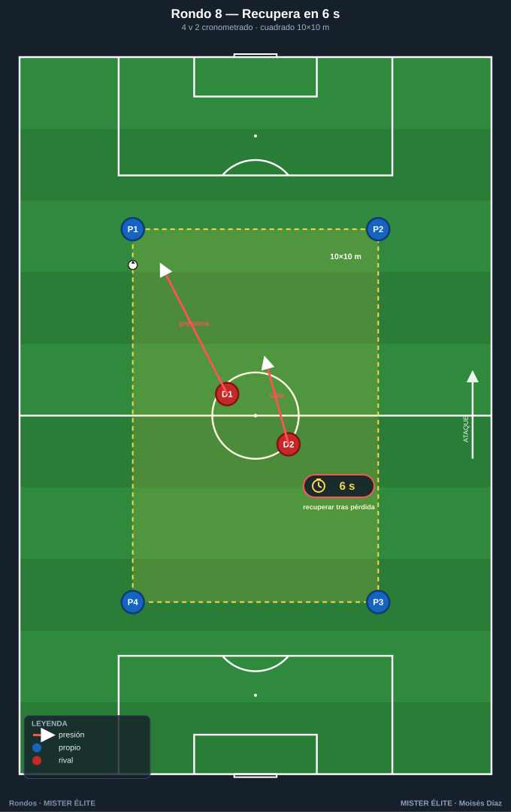
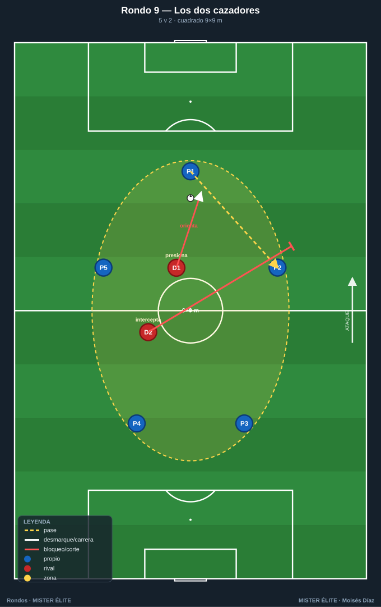
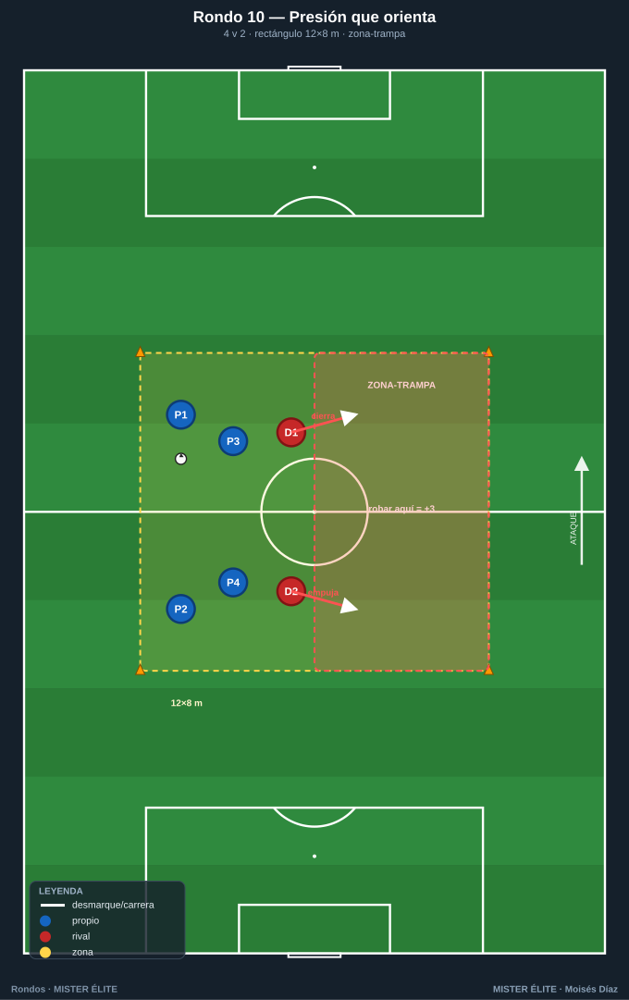
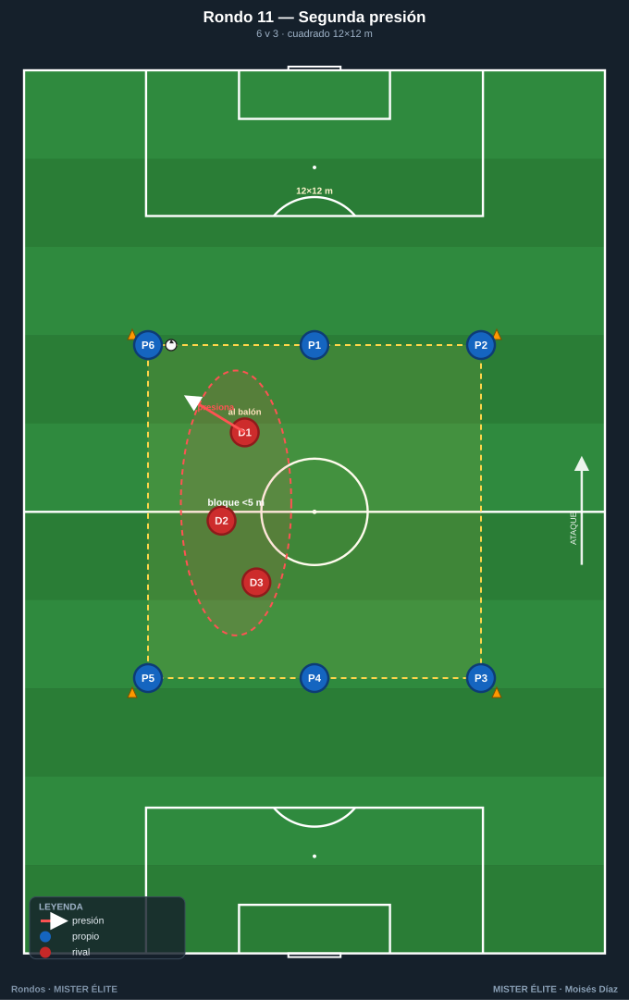
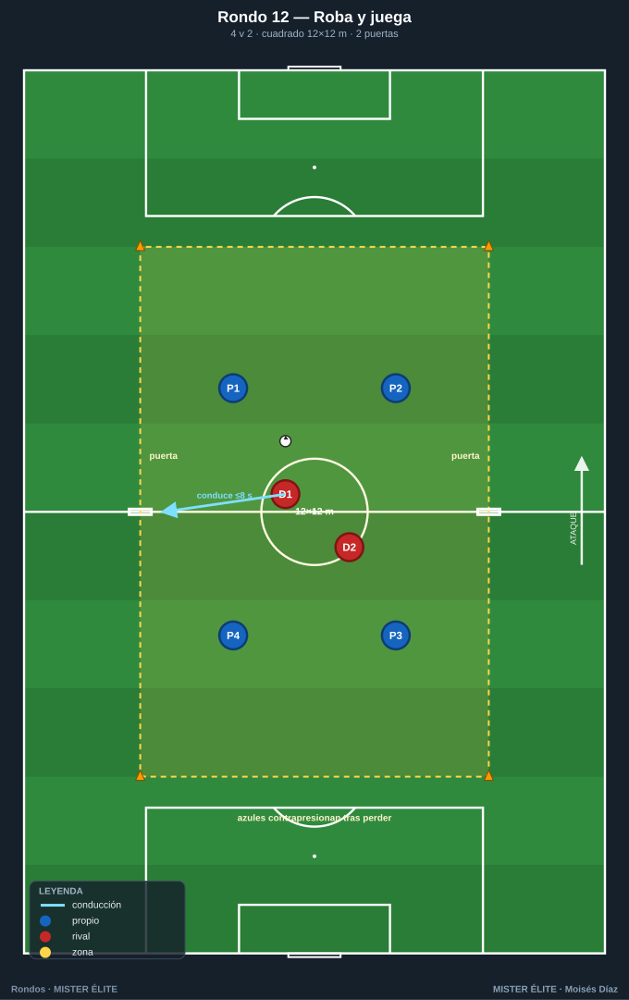
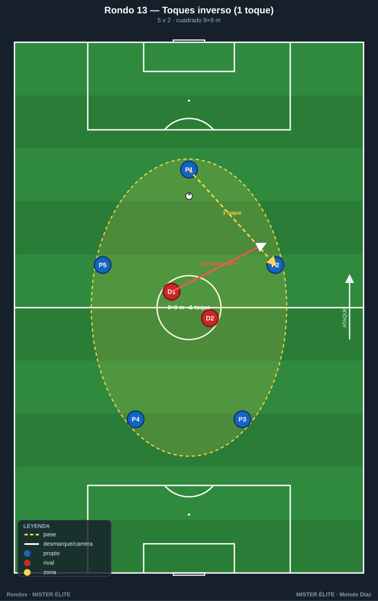
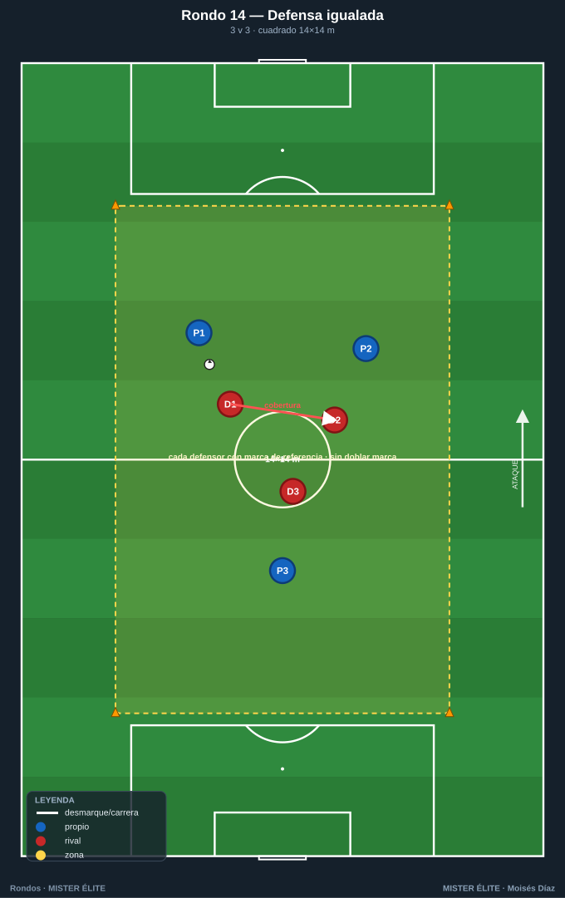

Familia 2 · Presión y recuperación (Rondos 8–14)
Foco en el DEFENSOR/RECUPERADOR: presión tras pérdida, recuperar en X segundos, coordinación de presionadores, orientar la presión, transición ofensiva-defensiva.
Notación: poseedores = azules, defensores/recuperadores = rojos, comodines = ámbar. Espacio con conos; flechas según
README.
Rondo 8 — "Recupera en 6 segundos" (4v2, cronometrado)
Objetivo - Táctico (defensivo): presión inmediata tras pérdida (contrapresión); reducir el tiempo de recuperación. - Cognitivo: leer el momento de saltar a robar. - Físico: esfuerzo explosivo corto.
Organización - Relación: 4 v 2. - Espacio: cuadrado de 10×10 m. - Material: 1 balón, 4 conos, petos, cronómetro/silbato.

Desarrollo 1. Los 4 azules conservan; los 2 rojos defienden. 2. Cuando los rojos roban (o sale el balón), se cronometran 6 segundos: deben recuperar tras una nueva pérdida simulada en ese tiempo, o se mide cuánto tardan de media. 3. Énfasis en saltar juntos, no esperar.
Provocaciones (medibles) - Meta: recuperar en menos de 6 s. Se registra el tiempo de cada recuperación. - Recuperar bajo el umbral 3 veces seguidas = ganan la serie. - Azules a 2 toques (les obliga a ser rápidos y abre ventana de presión).
Variantes (fácil → difícil) - Fácil: 11×11, umbral 8 s. - Medio: 10×10, umbral 6 s. - Difícil: 9×9, umbral 4 s, azules a toque libre.
Coaching - "Presión a la primera, no a la segunda: el momento es cuando el balón viaja." - "Uno presiona al balón, el otro cierra el pase de seguridad." - Postura del defensor: orientar al rival hacia donde queremos robar.
Duración / series: 5 series de 2 min (alta intensidad). Rotar parejas cada serie.
Rondo 9 — "Los dos cazadores" (5v2, coordinación de pareja)
Objetivo - Táctico: coordinación de los dos defensores (uno al balón, otro a la cobertura/intercepción). - Cognitivo: comunicación y gatillo de presión compartido.
Organización - Relación: 5 v 2. - Espacio: cuadrado de 9×9 m. - Material: 1 balón, 4 conos, petos.

Desarrollo 1. Cinco azules conservan; los dos rojos actúan como pareja: nunca van los dos al balón. 2. El "presionador" sale al poseedor orientándolo a un lado; el "interceptor" se coloca en la línea de pase de ese lado. 3. Al cambiar el balón de lado, los roles se intercambian.
Provocaciones (medibles) - Prohibido que los dos rojos vayan al mismo poseedor (si lo hacen, +1 gratis para los azules). - Recuperación por intercepción = +2; robo directo = +1. - Azules a 2 toques.
Variantes (fácil → difícil) - Fácil: 10×10, sin obligación de roles. - Medio: 9×9, roles obligatorios. - Difícil: 8×8, azules a 1 toque → la pareja debe anticipar más.
Coaching - "Uno aprieta, otro tapa. Nunca los dos al balón." - "Orienta el pase con tu carrera y tu compañero intercepta." - Hablar: "¡voy!" / "¡tapo!".
Duración / series: 4×3 min. Parejas fijas una serie para que se entiendan.
Rondo 10 — "Presión que orienta" (4v2 con zona-trampa)
Objetivo - Táctico: orientar la presión hacia un lado predeterminado (la "trampa"); guiar al rival. - Cognitivo: reconocer la zona-trampa y conducir al rival hacia ella.
Organización - Relación: 4 v 2. - Espacio: rectángulo 12×8 m dividido en dos mitades (una sombreada = zona-trampa). - Material: 1 balón, 6 conos, petos.

Desarrollo 1. Los rojos fuerzan que el balón llegue a la zona-trampa y roban allí. 2. La presión no es "ir a por el balón" sino cerrar salidas para empujar el juego a la trampa. 3. Los azules conservan evitando la zona marcada.
Provocaciones (medibles) - Robo en la zona-trampa = +3; robo fuera = +1. - 8 pases sin entrar en la trampa = +1 azul. - El presionador cierra el lado fuerte con su cuerpo.
Variantes (fácil → difícil) - Fácil: zona-trampa grande (60 % del campo). - Medio: zona-trampa = una mitad. - Difícil: zona-trampa pequeña (una esquina) → presión muy precisa.
Coaching - "No persigas el balón, condúcelo. Cierra un lado para abrir el que tú quieres." - "El cuerpo del defensor es una pared: orienta con él." - El segundo defensor cubre la salida de la trampa.
Duración / series: 4×3 min. Cambiar el lado de la trampa entre series.
Rondo 11 — "Rondo con segunda presión" (6v3 en cadena)
Objetivo - Táctico: presión escalonada con tres defensores: 1.º al balón, 2.º a la línea de pase, 3.º cobertura. - Cognitivo: basculación del bloque de 3 según el lado del balón.
Organización - Relación: 6 v 3. - Espacio: cuadrado de 12×12 m. - Material: 1 balón, 4 conos, petos (6 azul, 3 rojo).

Desarrollo 1. Seis azules conservan; los tres rojos basculan en bloque hacia el lado del balón. 2. El más cercano presiona; los otros dos achican y cierran líneas del lado fuerte. 3. Al cambiar el balón de lado, todo el bloque se desplaza.
Provocaciones (medibles) - Los 3 defensores a menos de 5 m entre el más cercano y el siguiente (bloque compacto). - Recuperación tras basculación correcta = +2. - Azules: 2 cambios de lado sin pérdida = +1.
Variantes (fácil → difícil) - Fácil: 14×14, sin obligación de compactar. - Medio: 12×12, bloque compacto obligatorio. - Difícil: 10×10 → basculación más exigente.
Coaching - "Bloque corto: si te separas, abres un pasillo." - "Bascula al lado del balón, deja el lejano." - Ajustar distancias continuamente, nunca quietos.
Duración / series: 4 series de 3 min. Rotar el trío defensor.
Rondo 12 — "Roba y juega" (4v2 con transición premiada)
Objetivo - Táctico: transición ofensiva tras robar — el equipo defensor, al recuperar, busca un objetivo. - Cognitivo: cambio inmediato de mentalidad defensa→ataque.
Organización - Relación: 4 v 2, con 2 mini-porterías de conos en lados opuestos. - Espacio: cuadrado 12×12 m con una puerta de conos (2 m) en cada lado largo. - Material: 1 balón, 8 conos, petos.

Desarrollo 1. Los azules conservan (rondo normal 4v2). 2. Cuando los rojos roban, tienen 8 segundos para conducir el balón por cualquiera de las dos puertas. 3. Si lo logran, suman; si no, devuelven y se reinicia.
Provocaciones (medibles) - Robar +1; conducir por una puerta en ≤8 s tras robar +2 adicional. - Los azules, al perder, hacen contrapresión para impedir la puerta. - Toques libres para los azules (foco en la fase defensiva-transición).
Variantes (fácil → difícil) - Fácil: sin límite de tiempo para la puerta. - Medio: 8 s para la puerta. - Difícil: 5 s + 3 puertas.
Coaching - "Robar no es el final: la primera decisión tras el robo gana el ejercicio." - "Al perder, los dos primeros segundos son para frenar, no para lamentarse." - Antes de robar, mirar dónde está la puerta libre.
Duración / series: 5×2,5 min. Alta exigencia de transición.
Rondo 13 — "Presión con límite de toques inverso" (5v2)
Objetivo - Táctico: presionar para forzar el error técnico del poseedor restringiendo su tiempo. - Cognitivo: el defensor cronometra mentalmente el toque del rival y salta en el control malo.
Organización - Relación: 5 v 2. - Espacio: cuadrado 9×9 m. - Material: 1 balón, 4 conos, petos.

Desarrollo 1. Los azules juegan obligatoriamente a 1 toque (condición que les presiona). 2. Los rojos saltan anticipando el control de primera; buscan el balón que rebota mal. 3. El defensor presiona al receptor, no al pasador.
Provocaciones (medibles) - Azules a 1 toque obligado; 2 toques = balón a los defensores (punto rojo). - Recuperación por anticipación al control = +2. - 10 pases a 1 toque encadenados = +1 azul.
Variantes (fácil → difícil) - Fácil: azules a 2 toques. - Medio: 1 toque obligado. - Difícil: 1 toque obligado + cuadro 8×8.
Coaching - "Presiona al que va a recibir, no al que pasa: roba en el control." - "Si el rival está obligado a 1 toque, su error está cerca: aprieta." - Arrancar la presión cuando el balón sale del pie del pasador.
Duración / series: 4×3 min. Rotar pareja defensora.
Rondo 14 — "Defensa numéricamente igualada" (3v3 de mantenimiento defensivo)
Objetivo - Táctico: defender sin superioridad ofensiva del rival (igualdad); marcaje, cobertura y robo en 3v3. - Cognitivo: asignar marcas y leer el desmarque.
Organización - Relación: 3 v 3 (un equipo conserva, el otro recupera; al robar, se invierten los roles). - Espacio: cuadrado 14×14 m (más amplio por la igualdad). - Material: 1 balón, 4 conos, petos de dos colores.

Desarrollo 1. Tres conservan, tres recuperan; en igualdad no hay rondo "cómodo". 2. Al robar, el equipo que recupera da 3 pases para "ganar" la posesión y entonces cambian los roles formalmente. 3. Cada defensor tiene una marca de referencia con coberturas.
Provocaciones (medibles) - Recuperar + 3 pases de consolidación = posesión ganada (+1) y cambio de rol. - 6 pases mantenidos = +1. - Prohibido el marcaje doble a un mismo poseedor.
Variantes (fácil → difícil) - Fácil: 4v3 (vuelve la superioridad para el que conserva). - Medio: 3v3, consolidación de 3 pases. - Difícil: 3v3 en 12×12 + 2 toques al conservar.
Coaching - "En igualdad defiende tu zona y comunica las marcas." - "Tras robar, asegura antes de atacar: 3 pases para respirar." - Cobertura: nunca dos defensores al mismo hombre.
Duración / series: 4 series de 3 min. Descanso 1 min (esfuerzo alto por la igualdad).
MISTER ÉLITE — Moisés Díaz